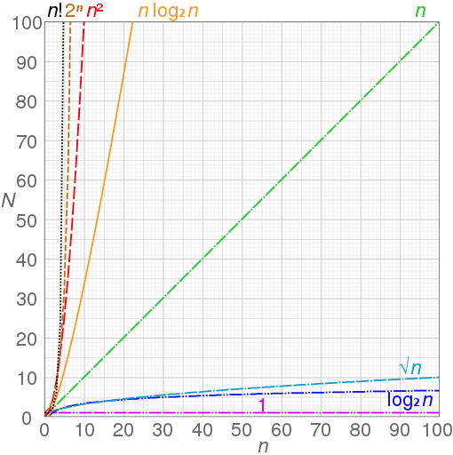

Временная сложность определяет количество операций, которые необходимо выполнить алгоритму для обработки входных данных объемом n.
Показатель сложности усредняется, но на практике необходимо исходить из худшего случая, при котором для обработки входных данных требуется максимальное количество операций. Для этого используется так называемая нотация «O» большое. Грубо говоря, выражает доминантный член функции стоимости алгоритма в худшем случае.
Пример из статьи в википедии, демонстрирующий рост числа операций с ростом объема входных данных для алгоритмов разной временной сложности.

Далее в этой статье я попробую собрать данные о временной сложности различных реализаций ML/DL алгоритмов. В статье — количество признаков, — количество образцов.
Алгоритмы из scikit-learn
Nearest Neighbors Algorithms. Временная сложность зависит от имплементации.
-
brute force (наиболее нативная имплементация, дистанция считается между всеми точками дата-сета). Сложность при построении . Сложность при запросе . Время расчета не зависит от структуры данных и количества «ближайших соседей».
-
K-D tree. Сложность при построении . Сложность при запросе для небольшого числа фич — . Для большего числа измерений, сложность возрастает до . Время расчета сильно зависит от структуры данных и растет с увеличением количества «ближайших соседей».
-
Ball Tree. Сложность при построении . Сложность при запросе — . Время расчета сильно зависит от структуры данных и растет с увеличением количества «ближайших соседей».
Больше подробностей смотри в документации
LinearRegression. Временная сложность — в зависимости от реализации.
SGDClassifier. Временная сложность .
SVC. Временная сложность — . Алгоритм реализован на библиотеке libsvm
LinearSVC. Временная сложность . Алгоритм реализован на базе библиотеки liblinear, который реализует Large Linear Classification (подробнее тут)
DecisionTree. Нахождение оптимального дерева является NP-полной задачей и ее временная сложность .
Временная сложность построения сбалансированного бинарного дерева для наивной имплементации , сложность расчета по построенной модели — . На практике сбалансированного дерева не получается, поэтому сложность построения дерева возростает до . В scikit-learn используется препроцессинг, что позволяет уменьшить итоговую сложность для всего дерева до . Подробнее.
DecisionTreeClassifier. Обход дерева имеет временную сложность , ну или . Если осуществляется сравнение по всем признакам, то , поэтому важно определять количество сравниваемых признаков.
RandomForest. , где — число решающих деревьев. Сложность можно уменьшить с помощью параметров.
Multi-layer Perceptron. , где — количество нейронов, — число скрытых слоев, — количество выходов и — число итераций.
Алгоритмы кластеризации
Affinity Propogation. , где — количество примеров, — число итераций до сходимости. Сложность по памяти при этом
DBSCAN. , где — количество примеров, — среднее число соседей. Сложность по памяти при этом линейная
kMean. Средняя сложность по времени , где — количество примеров, — число итераций до сходимости, число соседей. В худшем случае сложность вырастает до , где число фичей.
MeanShift. При использовании flat или ball tree кернелов, сложность по времени , где — количество точек кластеризации. В многомерном пространстве сложность стремится к .
Статья будет дополняться…
Подробнее о нотации в асимптотическом анализе и про базовые принципы временной сложности